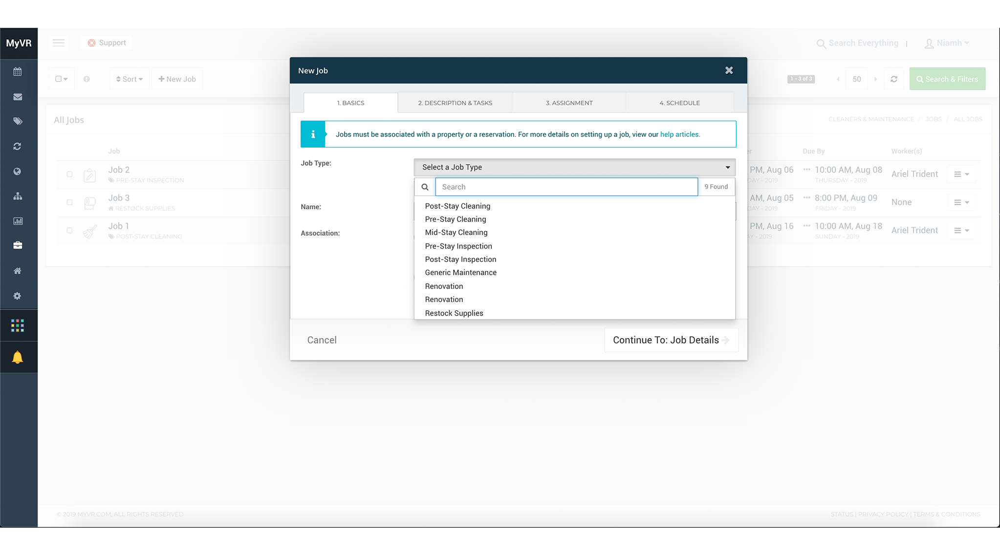
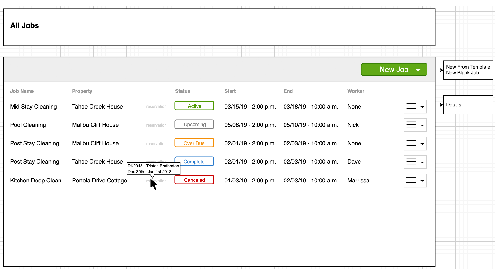
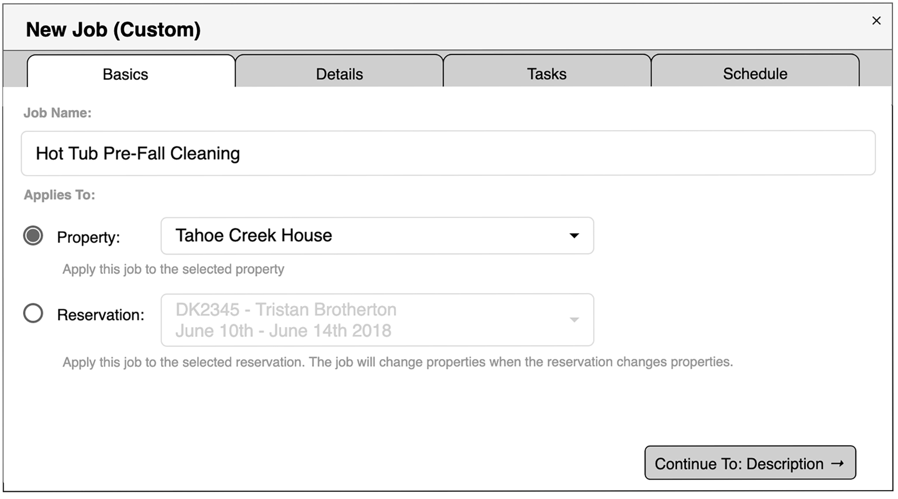
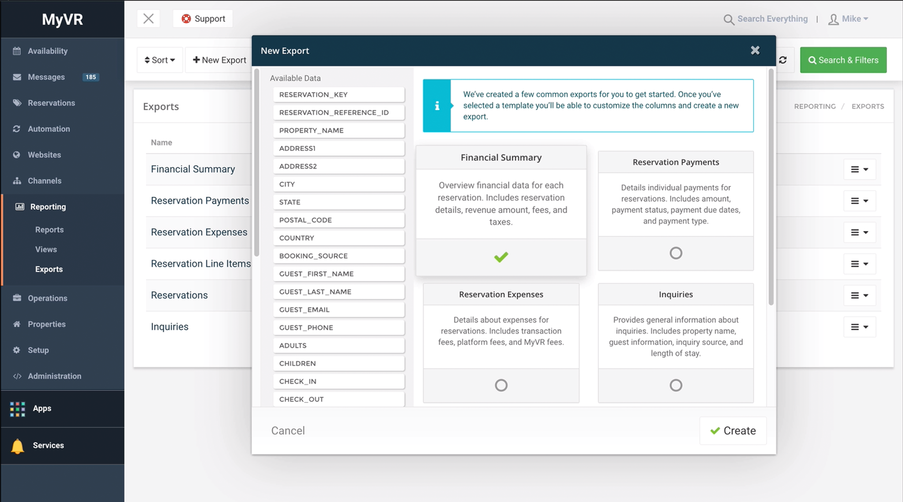
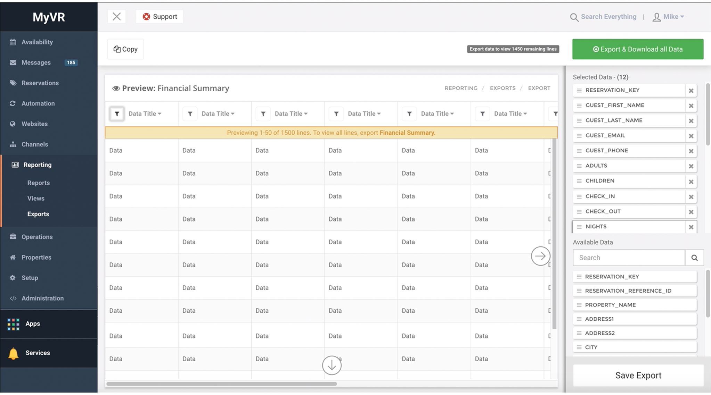
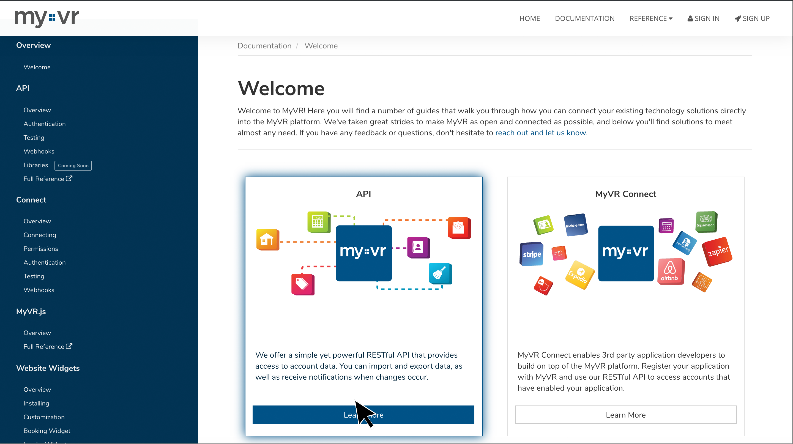
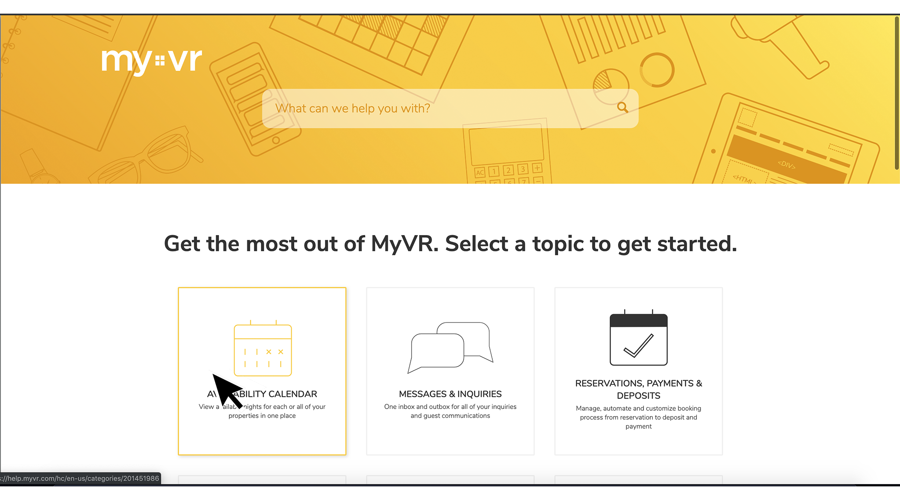
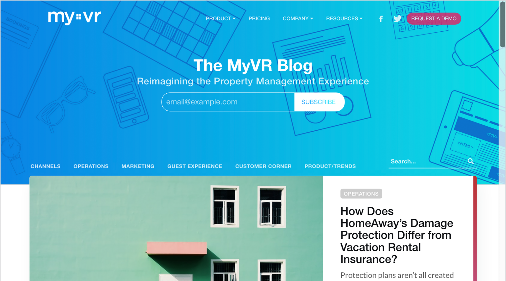

UI/UX & Engineering
My unusual background came together in an interesting way when
I began working at MyVR. Some of my projects were heavily UI
focused, redesigning and implementing websites. Some took advantage
of my entire range of skills (and added to them), spanning from wire
framing to UI implementation to tackling part of the backend.
Because of this, it is difficult to separate the UI/UX project
from the engineering ones.

Cleaners & Maintenance
For this significant MyVR feature, I led the design of,
designed and devloped the first round of the UI (haml & less),
and built part of the backend (Python) and wired it to the
frontend.

Cleaners & Maintenance
Working with product specs, I designed Cleaners &
Maintenance to use MyVR's pre-existing components including
list views, modals, and dropdown selectors.

Cleaners & Maintenance
While I developed the first round of UI for the entire feature,
the backend and frontend wiring was shared among the
engineering team (I worked on the Jobs list and modal views
show here). Having a working UI form the start made increased
efficiency and this practice is now used when possible.

Custom Exports
I was tasked with creating the Ui for a more user-customizable
version of MyVR's data exports from the PM's rough wireframes.
This involved tweaking a bootstrap modal and creating a new UI
component that goes with MyVR's other components.

Custom Exports
The custom component needed a way for users to change the
fields in a CSV and preview those changes in a table. The
table's columns had to always have visitble filters, but be
scrollable on both the x and y axis.

MyVR Developer Portal
I redeisgned the MyVR Developer Portal. This redesign was
mostly visual, as this site did not match the modern feel of
other MyVR sites. It was a place where a little fun could be
added, so I created some custom illustrations and animations to
be used throughout the portal.

MyVR Support Site
I redesigned the MyVR support site, which is hosted and edited
on Zendesk. It involved creating new custom icons and a custom banner.
See more.

MyVR Blog
I redeisgned the MyVR Blog, created and hosted on Ghost. This
redesign required learning Handlebars.js and using Ghost's
API client. I made the banners and article illustrations as well.
See more.
Previous
Next
* Please
contact me
if you would like to see more of any of
the above projects.